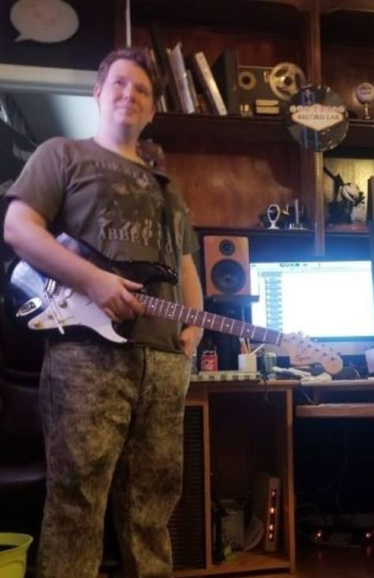

Meeting the Team
The Owners Las Vegas Record Lab LLC was founded in the year two thousand and fourteen by a
father and son duo named Stephen Noel Tracy, the father, and Stephen Todd Tracy, the son.
Between the two of them they have worked in studios all around the country. They have produced
tracks that have cracked the Billboard Top 40, worked along some of the worlds biggest artists and
performed around the world.